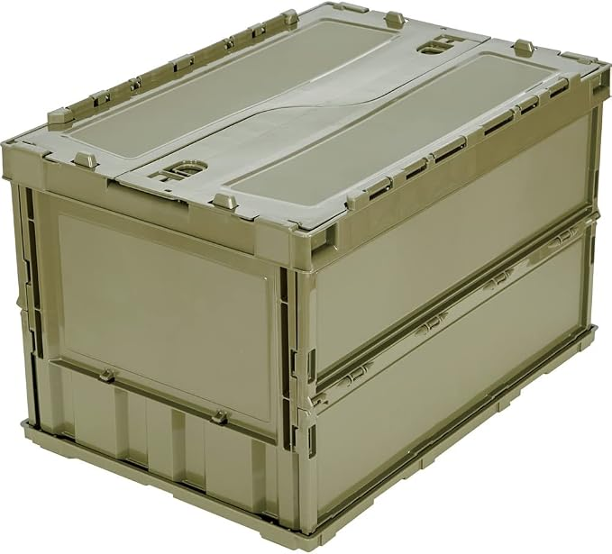
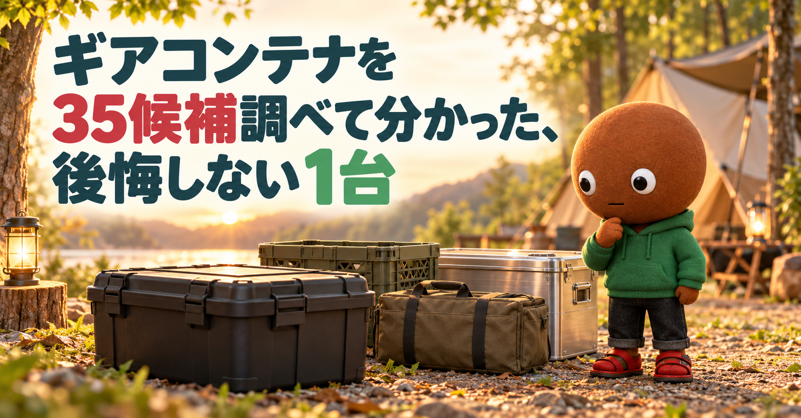
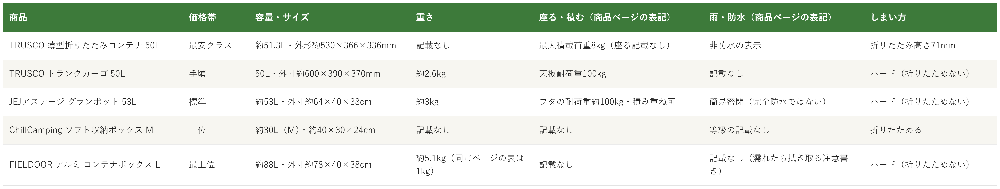

Amazonで見るキャンプ道具の収納ボックスを、容量だけで選んで買い間違えたくない人へ
そのギアコンテナ、
容量だけで選んでいませんか？
キャンプ道具をまとめて運ぶ・積むためのギアコンテナ・収納ボックスを35候補調査。容量だけでなく、座れる耐荷重・雨の書き方・しまい方まで確認し、使い方が重複しない5商品を比較しました。
自分に合うギアコンテナを探す
この記事はAmazonアソシエイト・プログラムの参加者として、紹介料を得る場合があります（PR）。仕様は調査時点の情報です。
35候補から、使い方の違う5商品に絞りました。まずは気になる1つへ。向いている人・向いていない人と、低評価レビュー、使うときの注意もまとめています。
35候補を調査
5商品に厳選
低評価レビューも確認済み
結論から先に言うと：
何を入れるか、座る・積むか、雨ざらしか、使わない時にどうしまうか。何を優先するかで1つを。
横にスワイプして、5商品を見比べる
選び方の基準は3つ
調べてわかったのは、基準は3つでした。
1つ目は「何を、どれだけ運ぶか」。BE-PALの記事は、選ぶ時は「クルマの荷室サイズ」「自宅での保管場所」「入れる道具の種類」から考える、としています。容量の目安は、30Lは小物専用と割り切ると運びやすく、50Lと70Lはソロキャンプの道具の収納テストで、70Lには大きめのテントまで入った、と書かれています。今回の5商品は、約30L（ChillCamping M）から約88L（FIELDOOR L）までです。
2つ目は「座る・積むか」。同じ「座れる」でも、商品ページの書き方が違いました。TRUSCOのトランクカーゴは「天板耐荷重100kg」、JEJアステージは「フタの耐荷重約100kg」、TRUSCOの折りたたみコンテナは「最大積載荷重8kg」で、ChillCampingとFIELDOORは座る・積むについての数字が見当たりませんでした。BE-PALの記事は、ハードコンテナは雨や外からの衝撃に強く、座る、重ねる、道具を載せるといった使い方ができる例があるとしています。
3つ目は「雨と、使わない時のしまい方」。防水の書き方は、TRUSCOの折りたたみが「非防水」、JEJが「簡易密閉（完全防水ではない）」、TRUSCOのトランクカーゴとFIELDOORは防水の記載なし、ChillCampingは等級の記載なしでした。しまい方は、折りたためる（TRUSCOの折りたたみ・ChillCamping）か、そのまま置くハード型かで変わります。BE-PALの記事は、ソフトコンテナは使わない時に折りたためて保管場所を取らない、と紹介しています。
比較表

価格帯・容量とサイズ・重さ・座る積む・雨・しまい方の比較（価格帯は、調査時点のAmazon出品価格の順に付けた目安です。価格は変動し、サイズや色で差があります。数字は商品ページの表記で、実際の使い心地や耐久性を保証するものではありません）
TRUSCO 薄型折りたたみコンテナ 50L
- 最安クラス
- 約51.3L・外形約530×366×336mm
- 重さの記載なし
- 最大積載荷重8kg（座る記載なし）
- 非防水の表示・折りたたみ高さ71mm
TRUSCO トランクカーゴ 50L 黒 BLKC-50
- 手頃
- 50L・外寸約600×390×370mm
- 約2.6kg
- 天板耐荷重100kg
- 防水の記載なし・折りたためない
JEJアステージ グランポット 53L（GPD-640S）
- 標準
- 約53L・外寸約64×40×38cm
- 約3kg
- フタの耐荷重約100kg・積み重ね可
- 簡易密閉（完全防水ではない）
ChillCamping ソフト収納ボックス（Mサイズ）
- 上位
- 約30L（M）・約40×30×24cm
- 重さの記載なし
- 耐荷重の記載なし
- 等級の記載なし・折りたためる
FIELDOOR アルミ コンテナボックス 取っ手付（Lサイズ）
- 最上位
- 約88L（L）・外寸約78×40×38cm
- 約5.1kg（同じページの表は1kg）
- 耐荷重の記載なし
- 防水の記載なし・濡れたら拭き取る注意書き
向いてる人
- キャンプの前後で、使わない時の保管場所を小さくしたい人（折りたたみ高さ71mm）
- フタをスライドロックで留めて、車で運びたい人
- まず最安クラスのコンテナで試してみたい人
向いてない人
- フタに座ったり、重いものを載せたりしたい人（商品ページの最大積載荷重は8kg、座れるという記載は見当たりません）
- 雨ざらしの屋外に置きたい人（防水レベルは「非防水」の表示）
- 重さを知ってから決めたい人（商品ページに重さの記載がありません）
選ぶ決め手折りたたむと高さ71mmになる50Lです。座る・重ねて載せる使い方より、使わない時の置き場所を小さくしたい人向けの1台です。
低評価レビューを調べました
Amazonのレビューでは、★5に、物流で使うようなものより丁寧に扱わないと壊れてしまうかもと思っていたが、思いの外頑丈だった、という投稿がありました（購入前の不安と、その後の感想です）。★4には、セール中に買ったが他店と比べて少し安いだけだった、という投稿がありました。★1〜★2の投稿は、表示された範囲では見当たりませんでした（評価の内訳には、★1が0%、★2が1%あります）。個別の投稿の真偽までは確認できません。
参考：Amazon商品ページのレビュー（★4、★5）
TRUSCOの薄型折りたたみコンテナは、
使わない時に小さくしたい人に
最適な1台です。
容量は約51.3L、
折りたたむと高さ71mmです。
最大積載荷重は8kgで、
防水レベルは非防水の表示です。
向いてる人
- フタに座ったり、道具を載せる台にしたりしたい人（天板耐荷重100kg）
- ハードコンテナで道具を守りたい人（約2.6kg）
- 評価の件数が多い定番を選びたい人（3,853件）
向いてない人
- 使わない時に小さくしたい人（折りたためないハード型です）
- 雨ざらしの屋外に置く人（防水の記載は見当たりません）
- 入れたい機器の内寸がぎりぎりの人（レビューに、内寸が少し小さかったという声）
選ぶ決め手天板耐荷重100kgで、約2.6kgです。座る・載せる・運ぶを1つで済ませたい人向けの、ハードコンテナの定番です。
低評価レビューを調べました
Amazonのレビューには、★3で、ケルヒャーK2用に買ったが、ほんの少し小さかったので内寸を確認してほしい、という投稿がありました（50Lへの投稿で、5人が参考になったと答えています）。★4には、屋外に置くならスポンジテープで密閉する必要がある、テープを貼れば何年か使っていて雨水の侵入は無い、という投稿もあります（天板がフラットのタイプへの投稿です）。★1〜★2の投稿は、表示された範囲では見当たりませんでした（評価の内訳には、★1が1%、★2が0%あります）。個別の投稿の真偽までは確認できません。
参考：Amazon商品ページのレビュー（★3、★4）
TRUSCOのトランクカーゴは、
座れて載せられる箱がほしい人に
最適な1台です。
容量は50L、
重さは約2.6kgです。
天板耐荷重は100kgで、
防水の記載は見当たりません。
向いてる人
- 屋外に置くので、フタ裏のパッキンで、ほこりや水の入りを少し抑えたい人
- フタに座ったり、積み重ねたりしたい人（フタの耐荷重約100kg）
- バックル兼ハンドルで、ロックと持ち運びを1つで済ませたい人
向いてない人
- 完全防水を求める人（メーカーの説明が「完全防水ではありません」）
- 使わない時に小さくしたい人（折りたためません）
- パッキンの素材が気になる人（★3に、発泡スチロールかドアの隙間テープのような素材だったという声）
選ぶ決め手フタ裏パッキン付きで、フタの耐荷重は約100kgです。屋外に置く前提で、座れて積めるコンテナを選びたい人向けの1台です。
低評価レビューを調べました
Amazonのレビューには、★3で、パッキンが発泡スチロールのような、ドアの隙間テープのような素材で、ゴムを想像していた、という投稿がありました（8人が参考になったと答えています）。★4には、体重80kg以上でフタに座ってもベコベコしない頑丈さは心強いが、パッキンの溝に部分的な凹みがあり、密閉度に不安が残る、という投稿もあります。★1〜★2の投稿は、表示された範囲では見当たりませんでした（評価の内訳には、★1が5%、★2が4%あります）。個別の投稿の真偽までは確認できません。
参考：Amazon商品ページのレビュー（★3、★4）
JEJアステージのグランポットは、
屋外で使う座れる箱がほしい人に
最適な1台です。
容量は約53L、
重さは約3kgです。
フタの耐荷重は約100kgで、
簡易密閉です。
向いてる人
- ランタンや食器など、形の違う道具を仕切って運びたい人
- 使わない時は折りたたんで、場所を取りたくない人
- 箱から少しはみ出す道具もあるので、柔らかい入れ物がいい人
向いてない人
- フタに座ったり、積み重ねたりしたい人（耐荷重・座れるという記載は見当たりません）
- 雨ざらしで使いたい人（防水の等級の記載は見当たりません）
- 軽さを最優先にしたい人（レビューに、思ったより重いという声）
選ぶ決め手30Lと60Lから選べて、仕切り板が付くソフトタイプです。座る・積むより、形がばらばらの道具をまとめたい人向けの1台です。
低評価レビューを調べました
Amazonのレビューには、★4で、丈夫で中身が重くなっても気にせず使えるが、仕切りがもう1枚ほしい、バッグ自体が結構重い、という投稿がありました（Lサイズへの投稿です）。★3には、素材も作りも十分だが、価格はプレミアム、という英語の投稿があります（Mサイズへの投稿です）。★1〜★2の投稿は、表示された範囲では見当たりませんでした（評価の内訳には、★1が3%、★2が2%あります）。個別の投稿の真偽までは確認できません。
参考：Amazon商品ページのレビュー（★3、★4）
ChillCampingのソフト収納ボックスは、
形の違う道具をまとめたい人に
最適な1台です。
Mサイズは約30L、
Lサイズは約60Lです。
仕切り板と底板が付き、
折りたためます。
向いてる人
- アルミの質感で、サイトに置いても絵になる箱がほしい人
- 約88Lの大きさで、まとめて運びたい人（Lサイズ）
- 保証が付いている方が安心な人（出品者が全品1年保証と表示）
向いてない人
- 軽さを最優先にしたい人（約5.1kgの表記）
- フタに座ったり、載せたりしたい人（耐荷重の記載は見当たりません）
- 傷や歪みがないものを求める人（特記事項に、小傷・歪みがある場合があると記載）
選ぶ決め手アルミ製で約88Lです。座る・積むの数字より、見た目と丈夫さ、容量を重視する人向けの1台です。
低評価レビューを調べました
Amazonのレビューには、★3で、底が平らではなく少し上げ底になっている、バイクの後ろに積むには工夫が必要、という投稿がありました（Mサイズへの投稿です）。★3には、蓋が外れないので、蓋が完全に外れる別ブランドとは一長一短、という投稿もあります。★4には、他の素材より高価だが、美しく丈夫で軽い、という投稿があります（Lサイズへの投稿です）。★1〜★2の投稿は、表示された範囲では見当たりませんでした（評価の内訳には、★1が4%、★2が2%あります）。個別の投稿の真偽までは確認できません。
参考：Amazon商品ページのレビュー（★3、★4）
FIELDOORのアルミ コンテナボックスは、
見せる収納にもしたい人に
最適な1台です。
Lサイズは約88L、
重さは約5.1kgの表記です。
アルミ製で、
1年保証が付きます。
35候補をどう絞った？ 調査の経緯を見る
キャンプ用の収納ボックスは、ハード・折りたたみ・ソフトと種類が多く、容量が同じでも「座れない」「雨が入る」「畳めない」というギャップが起きやすい道具です。正直どれを選べばいいのか迷います。
なので今回、ギアコンテナ・収納ボックスの仕様を調べて比較しました。各商品ごとに、向いてる人・向いてない人も調べているので、自分に合う1つを探してみてください。
35候補から5つに絞り込みました
Amazonの検索結果で、評価4.0以上のキャンプ・アウトドア向け収納ボックスのうち、35商品（商品ページ41件）を個別に開き、評価と件数、主な仕様を確認しました。検索結果に出たもののうち、フタだけ・仕切り板だけといった付属品、クーラーボックス、ワゴンは除いています。検索結果の全商品を網羅したわけではなく、ここに挙げた35商品が今回の調査対象です。
今回の35候補は、ハード型が16商品（TRUSCO トランクカーゴ・RISU TC-50S・RISU TC-50・RISU TC-30SE・RISU TC-70・GORDON MILLER トランクカーゴ・GORDON MILLER スタッキングストレージ・JEJアステージ アクティブストッカー・JEJアステージ グランポット・THOR 53L・THOR 22L・アイリスオーヤマ RV900D・アイリスオーヤマ TRAILBOX 800・大竹産業 グリーンパル トランクボックス・グリーンパル キャリーコンテナ・FIELDOOR アルミコンテナ）、折りたたみ型が11商品（TRUSCO 薄型折りたたみコンテナ・TRUSCO α折りたたみコンテナ・キャプテンスタッグ オリコン・キャプテンスタッグ 折りたたみコンテナ・キャプテンスタッグ 収納ボックス No25・BUNDOK フォールディングコンテナ・GORDON MILLER フォールディングコンテナ・DOD ホネアルヤーツ・DOD トートハコナール・木製フタ付き30L・木製フタ付き折りたたみ）、ソフト型が8商品（ChillCamping・ZEN Camps・8tail・ALBATRE・CARGO CONTAINER・WHATNOT・BUNDOK ギアケース・YOGOTO）です。使い方が重複しないよう、5商品に絞りました。
採用したのは、TRUSCO 薄型折りたたみコンテナ（折りたたみ）、TRUSCO トランクカーゴ（座れる定番のハード）、JEJアステージ グランポット（簡易密閉のハード）、ChillCamping ソフト収納ボックス（ソフト）、FIELDOOR アルミ コンテナボックス（アルミ）の5つです。
トランクカーゴ型の枠では、RISU TC-50S（評価4.6・2,216件）、RISU TC-50（評価4.5・953件）、GORDON MILLER トランクカーゴ50L（評価4.6・887件）、RISU TC-70（評価4.5・326件）などが重なります。TRUSCOは、評価4.6・3,853件と、件数がいちばん多く、天板耐荷重100kg・約2.6kgと数字が書かれているため選びました。RISU TC-50Sのページは、調査時点で発送まで4〜5週間と表示されていました。JEJアステージのアクティブストッカー（評価4.4・2,843件）は、座れて積める型で重なるため見送り、フタ裏のパッキンで差が出るグランポットを選びました。アイリスオーヤマ RV900D（評価4.2・801件）とTRAILBOX 800（評価4.2・105件）、大竹産業 グリーンパル 70L（評価4.3・301件・2個セット）は、使い方が重なり、決め手が見つからず見送りました。THOR 53L（評価4.6・12件）、THOR 22L（評価4.6・37件）、グリーンパル キャリーコンテナ（評価5.0・2件）、RISU TC-30SE（評価4.5・2件）、GORDON MILLER スタッキングストレージ（評価4.4・137件）は、件数が少なく、判断材料が足りませんでした。
折りたたみ型の枠では、キャプテンスタッグ 折りたたみコンテナ（評価4.3・2,889件と1,367件）、キャプテンスタッグ オリコン（評価4.5・621件）、キャプテンスタッグ No25（評価4.3・610件）、GORDON MILLER 50L（評価4.4・109件）、DOD トートハコナール（評価4.3・59件）、TRUSCO α折りたたみ（評価4.5・40件）、BUNDOK（評価4.2・35件）があります。TRUSCO 薄型折りたたみは、評価4.5・5,224件と、評価も件数も上回ったため選びました。DOD ホネアルヤーツ（評価5.0・5件）と、木製フタ付きの2商品（評価4.8・10件と4.5・8件）は、件数が少なく、判断材料が足りませんでした。
ソフト型の枠では、WHATNOT（評価4.6・4,743件）、ALBATRE（評価4.6・679件）、BUNDOK ギアケース（評価4.4・581件）、ZEN Camps（評価4.6・97件）、8tail（評価4.8・72件）、YOGOTO（評価4.2・75件）、CARGO CONTAINER（評価4.7・4件）がありました。ChillCampingは、評価4.3・1,525件で、30Lと60Lから選べて仕切り板が付くため選びました。WHATNOTは、商品名のサイズが幅36×奥行25×高さ32cmと小さいため、道具全体をまとめる使い方とは重ならないと考え、見送りました。FIELDOORは、Sサイズ（評価4.3・89件）とLサイズ（評価4.2・482件）があり、件数の多いLサイズで見ました。
低評価の商品も見ました
5商品それぞれについて、Amazon商品ページに表示されていた範囲のレビューを確認しました（ログインしないと見られる、星の低いレビューだけの一覧は確認できていません）。個別レビューの真偽までは検証できないため、確認できた範囲の傾向としてまとめています。ネット検索では、各商品の低評価を独立して検証した記事は見つかりませんでした。
確認できた指摘は、TRUSCO 折りたたみの価格がセールでも他店と少ししか変わらなかった点（1件）、TRUSCO トランクカーゴの内寸が機器に対して少し小さかった点（1件）、JEJ グランポットのパッキンの素材と凹み（2件）、ChillCampingの重さと価格（2件）、FIELDOORの底が上げ底だった点と蓋が外れない点（2件）です。
調べてみて驚いたこと
調査中、同じ「50L前後」でも、形がかなり違うことに驚きました。TRUSCOの折りたたみコンテナは外形が約530×366×336mmで、折りたたむと高さ71mmです。一方、トランクカーゴは外寸が約600×390×370mmで、折りたためません。容量の数字だけでは、車に積んだ時の姿や、使わない時の置き場所は分かりません。
もう1つ驚いたのは、「座れる」の書き方が商品ごとに違ったことです。TRUSCOのトランクカーゴは天板耐荷重100kg、JEJは約100kg（フタ）、TRUSCOの折りたたみは最大積載荷重8kg、ChillCampingとFIELDOORは数字の記載が見当たりませんでした。座る使い方を考えているなら、この数字を先に確認するのが安全です。
さらに、同じ商品ページの中で、数字が食い違うものもありました。ChillCampingは素材が「厚手のコットンキャンバス」と「1680D高耐久オックスフォードポリエステル」、FIELDOORは重さが「約5.1kg」と「1キログラム」でした。数字が複数ある場合は、購入前に確認するのが安全です。この記事では金額を載せず、相対的な目安で示しています。購入前に、Amazonの販売元と価格を確認してください。
つまり、容量の数字より、座る・積むか、雨ざらしか、使わない時にどうしまうかで選ぶのが大事だと分かりました。
ギアコンテナを使うときの注意
ここでは、今回確認できた根拠のある注意だけを載せます。
BE-PALの記事は、ハードコンテナは雨や外からの衝撃に強く、道具を守りやすいとしています。ただし商品ごとに書き方は違い、JEJアステージは「完全防水ではありません」、TRUSCOの折りたたみは「非防水」と表示しています。ランタンやカメラなどの精密機器、書類は、防水袋に入れてから収納すると安心です。
座る・載せる使い方は、商品ページに耐荷重の数字がある商品を選びます（TRUSCO トランクカーゴの天板耐荷重100kg、JEJの約100kg）。TRUSCOの折りたたみコンテナは最大積載荷重8kgで、重い道具を詰める使い方は、数字を確認してからにします。ソフトタイプは、重い道具を入れるとバッグ自体も重くなる、というレビューがありました。BE-PALの記事は、割れやすい道具（ランタンや皿など）を運ぶなら、仕切りやパッドの有無を確認する、としています。
アルミ製は、出品者が、素材の特性上、小傷や歪みがある場合がある、濡れたら水分を拭き取って保管する、と書いています。数字は、メーカーや販売ページの表記です。耐久性や安全を保証するものではありません。この記事は、購入や使用の判断を助けるための調査です。
迷ったらこれ
ここまで読んでも迷ったら、座れて、積めて、道具を守れるハード型を選ぶなら、評価の件数が今回いちばん多く、天板耐荷重100kgと重さ約2.6kgが書かれている、TRUSCO トランクカーゴ 50Lが、一番外しにくいと考えます（評価は4.6、3,853件）。雨ざらしで使うならJEJアステージ、使わない時の置き場所を取りたくないなら、折りたたみのTRUSCOも選択肢です。
Amazonで見る→よくある質問
Q. 何Lのギアコンテナを選べばいいですか。
A. BE-PALの記事は、30Lは小物専用と割り切ると運びやすく、50Lと70Lはソロキャンプの道具の収納テストで、70Lには大きめのテントまで入ったとしています。選ぶ時は、クルマの荷室サイズ、自宅での保管場所、入れる道具の種類から考えるのが良い、とも書いています。今回の5商品は、約30L、50L、約51.3L、約53L、約88Lです。
Q. フタに座っても大丈夫ですか。
A. 商品ページに数字があるのは、TRUSCO トランクカーゴの天板耐荷重100kgと、JEJアステージ グランポットのフタの耐荷重約100kgです。TRUSCOの折りたたみコンテナは最大積載荷重が8kg、ChillCampingとFIELDOORは、座る・積むについての数字が見当たりませんでした。
Q. 雨の中に置いても、中は濡れませんか。
A. 完全防水と書いている商品は、今回の5商品の中にありませんでした。JEJアステージは「完全防水ではありません」、TRUSCOの折りたたみは「非防水」と表示しています。TRUSCO トランクカーゴへのレビューには、屋外に置くならスポンジテープで密閉する必要がある、という投稿がありました（天板がフラットのタイプです）。
Q. 使わない時は、小さくできますか。
A. 折りたためるのは、TRUSCOの薄型折りたたみコンテナ（折りたたみ高さ71mm）とChillCampingのソフト収納ボックスです。TRUSCO トランクカーゴ、JEJアステージ、FIELDOORのアルミは、折りたためません。
Q. アウトドアワゴンやクーラーボックスとは、どう違いますか。
A. ギアコンテナは、道具をまとめて入れて、積んで運ぶための箱です。ワゴンは運ぶための台車、クーラーボックスは保冷のための箱で、役割が違います。それぞれ別の記事にまとめています。
こんな記事も書いてます
ミートボーの調査部屋で他の記事も見る（全本）


この記事はAmazonアソシエイト・プログラムの参加者として、紹介料を得る場合があります（PR）。
出典
- BE-PAL ハードコンテナ、ソフトコンテナ、バケットバッグ…長~く使えるアウトドア収納グッズ12選（種類ごとの特徴・容量の目安・選び方）：bepal.net
- Amazon.co.jp TRUSCO 薄型折りたたみコンテナ 50L：amazon.co.jp
- Amazon.co.jp TRUSCO トランクカーゴ 50L 黒 BLKC-50：amazon.co.jp
- Amazon.co.jp JEJアステージ グランポット 53L（GPD-640S）：amazon.co.jp
- Amazon.co.jp ChillCamping ソフト収納ボックス（Mサイズ）：amazon.co.jp
- Amazon.co.jp FIELDOOR アルミ コンテナボックス 取っ手付（Lサイズ）：amazon.co.jp